CS184 Homework 1
Jay Chiang (3035782580)
Task 1: Drawing Single-Color Triangles (20 pts)
The goal of this task is to rasterize triangles given the coordinates of
its three vertices and the desired color. The high-level algorithm used
for this part is very straightforward: We loop over a subset of pixels
that are likely to be inside the triangle. If the pixel is inside, we
color it by calling fill_pixel(). Otherwise, we continue the
loop.
Of course, there are a few implementation details that need to be
clarified. First, the subset of pixels to sample is chosen as the bounding
box of the triangle. In other words, we simply loop over the rectangular
area specified by
[min(x0, x1, x2), max(x0, x1, x2)] and
[min(y0, y1, y2), max(y0, y1, y2)]. This ensures that we
cover the entire area of the triangle while keeping a relatively low
sample size and avoid looping over the entire image. Obviously, this
algorithm is equal in runtime complexity as the "one that checks each
sample within the bounding box of the triangle."
Next, in order to determine if a pixel is inside a triangle, we employ the
line test as explained in lecture. The line test tells us which side a
sampled point is on relative to an edge. Since points that lie on an edge
are also considered to be inside the triangle, the side of a point
simplifies to either L(sx, sy) >= 0 or <= 0. To
determine inside(sx, sy), we then simply perform the line
test on all three edges and check if the sides are the same. This way,
whether the winding order of the vertices is clockwise or
counter-clockwise, our results will be correct since we only care about
the uniformity of sides instead of the actual values. It is also important
to point out that the sampled coordinate is the center of the pixel (i.e.
sx = px + 0.5, sy = py + 0.5).
As shown below, we successfully render basic/test4.svg.
However, we can see in the inspection that there is some aliasing for the
longer, slimmer, stretched-out shapes. This is because we are limiting
each pixel to be only one exact color without any interpolation,
smoothing, or filtering.

Task 2: Antialiasing by Supersampling (20 pts)
The goal of this task is to improve antialiasing by supersampling. In
other words, this process involves two parts: 1. Upsampling the original
image to create a high definition version and 2. Downsampling the high-def
version to match the dimensions of the original. The reason why this
process works is because unlike the previous version (i.e. sample rate =
1), we no longer limit pixel values to only one exact color and instead
allow pixels to take on composite, intermediate values. In other words,
imagine an edge splitting a pixel in half, where one side is red and the
other blue. By supersampling, we use that information to interpolate and
output purple instead of just red or blue, introducing more flexibility
and granularity.
As mentioned above, we have two parts to implement. First, we need to
upsample the original image to create a high definition version. We
achieved this by resizing the sample_buffer to
width * height * sample_rate whenever the sample rate changes
via GUI input. Then, in order to render the high definition image, we
modify our rasterize_triangle function. Instead of only doing
the triangle test for just the pixel itself, we check every single
subpixel. For esample, if the sample rate is 4, we divide the pixel into a
2x2 grid and check the 4 subpixels. Similar to before, if the subpixel is
within the triangle, we fill its color by modifying
sample_buffer[(sy * width + sx) + i * frame_size],
effectively dividing the sample_buffer into
sample_rate number of segments, each for one subpixel grid
entry.
Next, we implement part 2, which essentially comes down to loading tbe
sample buffer into the frame buffer and modifying the
resolve_to_framebuffer function. This is relatively easy as
we simply loop over every screen pixel and taking its average color across
the corresponding subpixels.
Finally, we can see the results below. Using the same example as task 1,
we can see that when we up the sample rate to 4 and 16, we get
increasingly less aliasing and more defined edges for the 5 shapes.
Sample rate: 1 per pixel
Sample rate: 4 per pixel

Sample rate: 16 per pixel

Task 3: Transforms (10 pts)
The goal of this task is to support the translate, scale, and rotate
operations for SVGs. The implementation is very straightforward. We simply
add the 3x3 transformation matrices as explained in lecture. To show that
the functionality is working correctly, I attempted to make the robot run
as displayed below.

Task 4: Barycentric coordinates (10 pts)
The goal of this task is to support texture interpolation via barycentric
coordinates. The high-level idea is very simple, for any point in a
triangle, when interpolating its value from the values of the vertices, it
is instinctive that the further a vertice is from the point, the less
influence it should have and vice versa. In practice, a point in
barycentric coordinate can be represented in
[alpha, beta, gamma] where
alpha + beta + gamma = 1, and the its value being equal to
alpha * value_at_vertice_a + beta * value_at_vertice_b + gamma *
value_at_vertice_c. As shown below in the triangle example, we can see that areas closer to
the green vertices are more green, red more red, and blue more blue. For
areas in between two or three vertices, we see that it is proportionally
influenced by its distances to the three vertices and their values (e.g.
purple area between red and blue vertices).
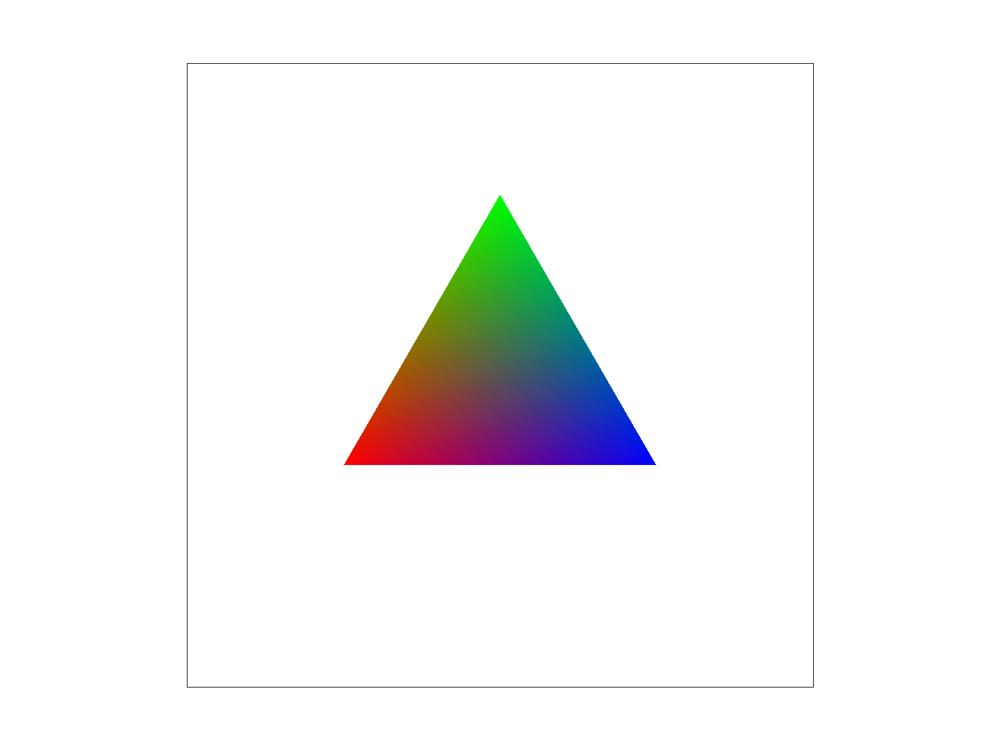
For my implementation of the barycentric interpolation (i.e.
rasterize_interpolated_color_triangle()), it basically
follows the general struction of the previous
rasterize_triangle function. The only difference is that
since we aren't given a color anymore, we need to calculate the color from
the vertices. This is done with the line test ratio as explained in
lecture. We essentially get the proportion of a vertice's influence by
comparing its distance to our sample point against its perpendicular
distance to the opposite edge. As shown below, we successfully render
basic/test7.svg.
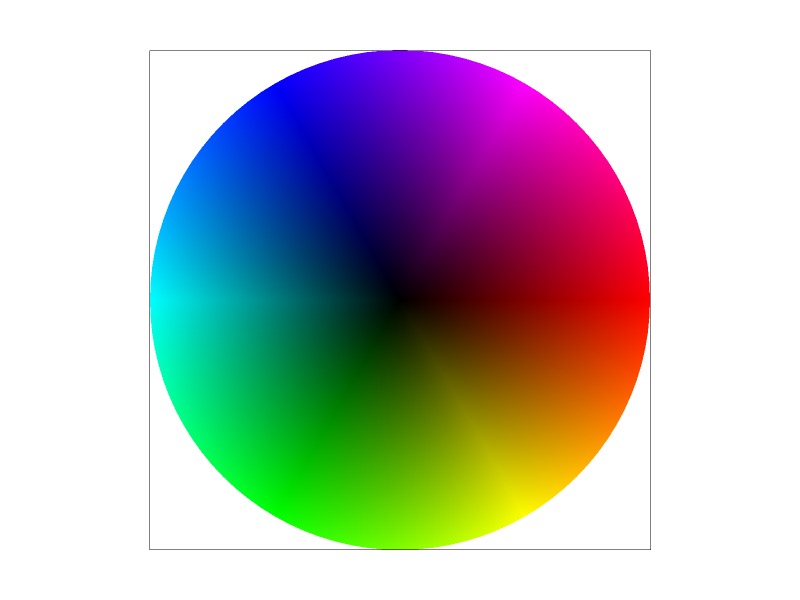
Task 5: "Pixel sampling" for texture mapping (15 pts)
The goal of this task to is to rasterize texture. In other words, given
two triangles, one in screen space and one in texture space, our objective
is to mold the latter into the shape of the former. To achieve this, we
must first convert screen coordinates to texture coordinates using
barycentric coodinates. In other words, we follow almost exactly the same
structure as the previous task, where we first determine alpha, beta,
gamma of the screen coordinates, then attain the corrsponding texture
coordinates by summing and scaling the vertices of the texture triangle
accordingly. Then, we simply extract the color from the texture and
rasterize it to the screen.
However, it is obvious that the texture coordinate does not always
corrspond to a perfect texture pixel. In other words, we need to a way to
interpolate its color. Here, we implemented 2 different algorithms,
nearest pixel and bilinear interpolation. Nearest pixel is very simple,
given a uv texture coordinate, we simply round it to the nearest whole
number and take that pixel. Obviously this will cause some aliasing as the
pixel will not accurately reflect the precise color of the sample. To
improve on this, we use bilinear interpolation, which essentially follows
the general idea of barycentric interpolation, where the closer a pixel is
to the sample point, the proportionally more influence it has on the final
result. I used a different, geomtric-based algorithm for this as opposed
to the mathematical one shown in lecture. Basically, as explained in the
graphic below, we take the four corner pixels surrounding the sample and
weigh them based on the size of the opposite square area, acheiving the
exact same result.
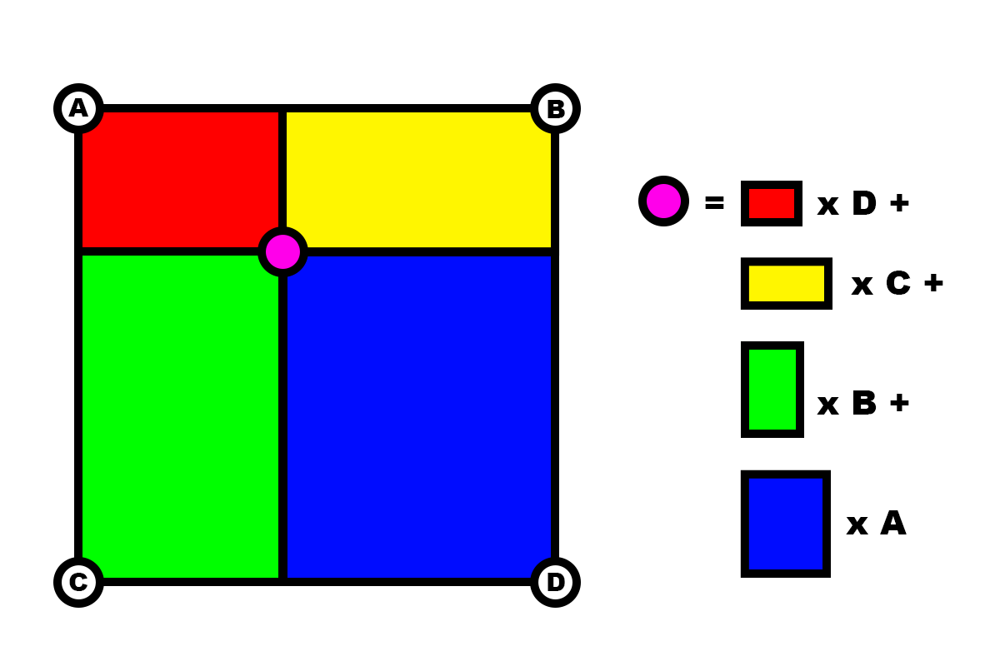
As shown below in the examples, bilinear interpolation outperforms nearest
pixel in every situation. This is due to the aforementioned fact that
nearest pixel is unable to interpolate intermediate colors and is limited
to 4 output options, which in most cases, do not contain the correct
value, creating not only a lot aliasing but also sharp, drastic color
changes. For example, the lat and long lines in the world map SVG are
aliased because they are so thin to the point where using nearest pixel
might miss them completely. On the other hand, since bilinear
interpolation is more or less just a weight average color filter, the
sampled image will be smoother and have less high-frequency-induced
aliasing. Interestingly, we can see below that nearest pixel produces
similar results to bilinear interpolation when the sample rate is
increased to 16 samples per pixel. This is because not only are they both
calculating the average color, as the sample rate increases, nearest pixel
actually approximates bilinear interpolation as the error from
force-rounding sample coordinates to whole numbers approaches towards
zero.
Nearest sampling at 1 sample per pixel
Bilinear sampling at 1 sample per pixel
Nearest sampling at 16 sample per pixel
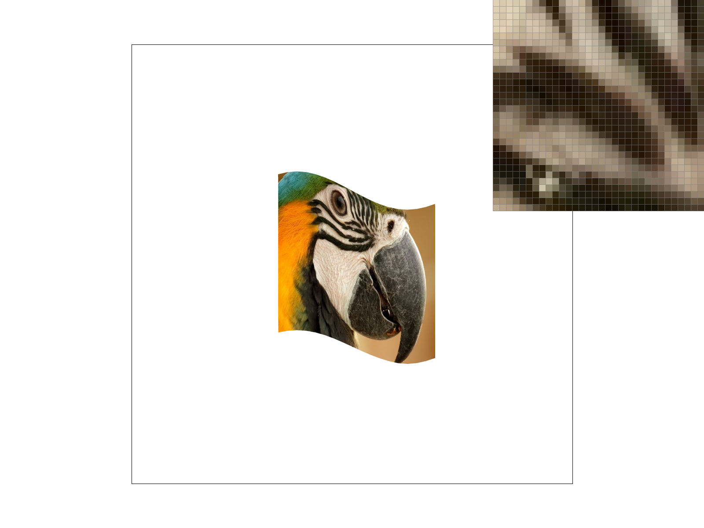
Bilinear sampling at 16 sample per pixel
We can also see the same effect in a few other examples:
Nearest sampling at 1 sample per pixel
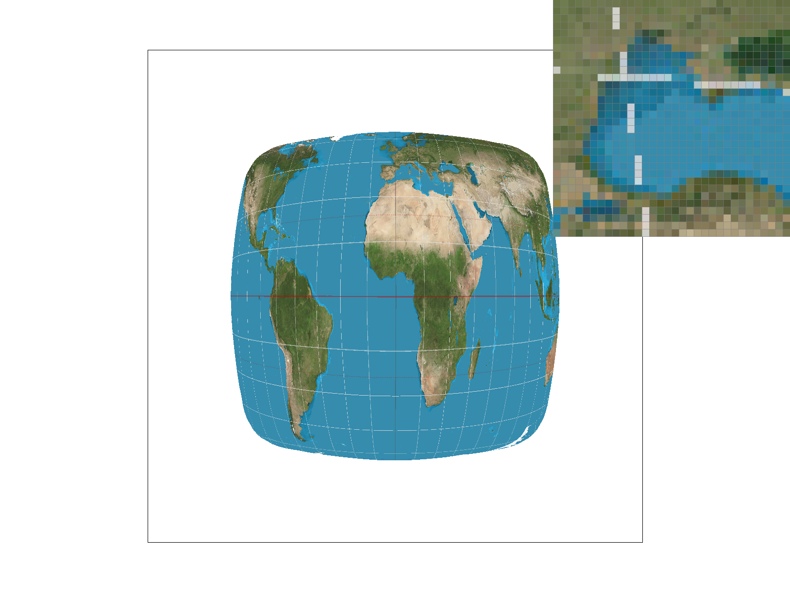
Bilinear sampling at 1 sample per pixel
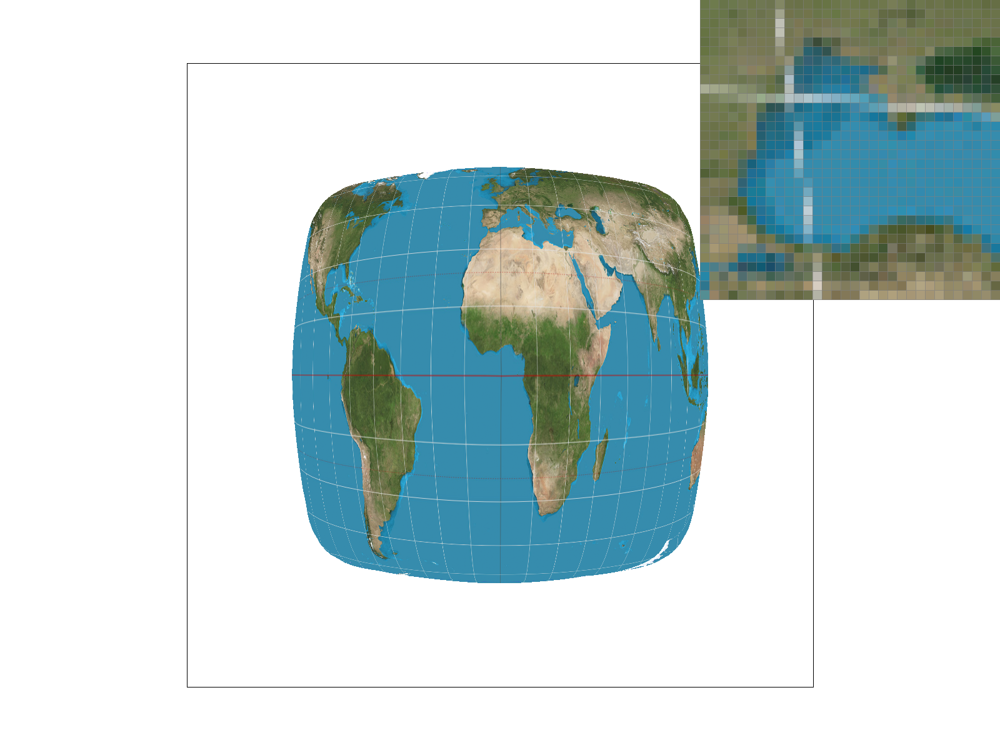
Nearest sampling at 1 sample per pixel
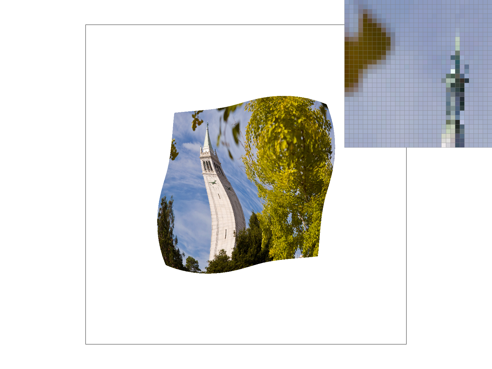
Bilinear sampling at 1 sample per pixel
Task 6: "Level sampling" with mipmaps for texture mapping (25 pts)
Finally, we move onto level sampling with mipmaps. The goal of this part
is to create a balance between antialiasing and quality. In other words,
although our previous parts successfully removed some aliasing, we forced
the entire image to same frequency level, causing certain parts of the
image to be too blurry, and other parts of the image not entirely
alias-free. To combat this problem, we use level sampling. The big idea
behind level sampling is that when we map texture onto an image, there
will be parts that require higher resolution texture and other parts
lower. In terms of triangles, imagine two screen triangles, one big and
one small, both mapped to texture triangles of the same resolution.
Naturally, we know that there will be more aliasing if we try to cram the
texture triangle into the small screen triangle as compared to the big
one. Conversely, stretching the texture triangle to fit the big screen
triangle may also cause it to be blurry. So the solution simply becomes
dynamically adjusting the resolution of the texture triangles depending on
their corresponding screen triangles. As a more concrete example, we can
imagine that in a video game, objects closer to the camera will require
higher definition texture while objects further will use lower definition
texture to avoid aliasing.
Now that we understand level sampling, we can implement it. First, we need
to be able to determine the resolution we need for our texture given a
screen triangle. We use the algorithm explained in lecture where we
basically try to estimate how much one unit movement in the screen space
corresponds to in the texture space. Obviously, the higher the ratio (i.e.
one pixel change in screen corresponds to multiple pixels in texture), the
less detail we need and vice versa. I won't go into too much detail
explaining the exact math since it is identical to lecture, but as shown
below, we first calculate [du/dx, dv/dx, du/dy, dv/dy], which
describes the rate at which the axes of the texture space changes with
respect to the axes of the screen space. We then use this information to
calculate D, which will be our depth level. The results of
this algorithm is shown below, where the red-to-yellow gradient describes
the low-to-high levels.
Formula for depth level
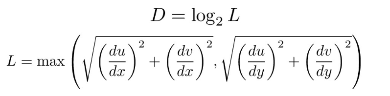
Heatmap for nearest level sampling
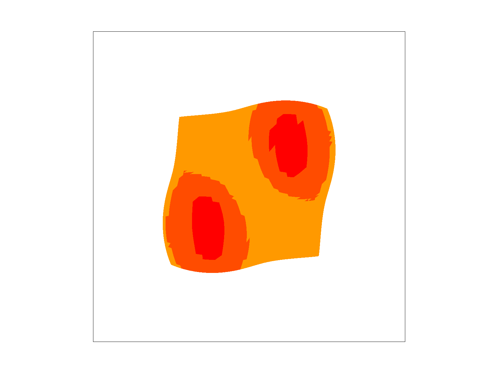
Heatmap for linear level sampling
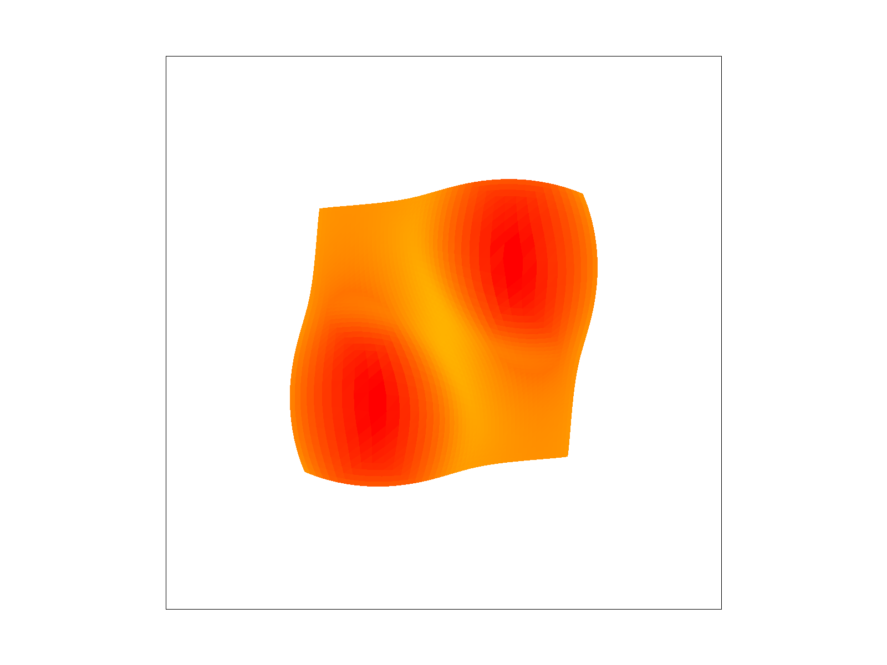
Finally, with the depth level for each pixel/subpixel, we go to the
closest mipmap and extract its color. This will be nearest level sampling.
For linear level sampling, we take the colors from the both the mipmaps
corresponding to the floor and ceiling levels and weigh them proportional
to their distance from the true level.
We show 6 combinations between [P_NEAREST, P_LINEAR] and
[L_ZERO, L_NEAREST, L_LINEAR] below. As we can see, similar
to results from earlier, we always produce less aliased results when we
use bilinear interpolation (i.e. right column always better than left
column). We can also see that when we use level zero sampling, we have the
least blurry results but also arguably the most amount of aliasing. This
makes sense because we are forcing every screen triangle to take on the
highest resolution textures. One the other hand, linear level sampling is
slightly better than nearest level sampling, mostly due to the fact that
it has the best of both worlds - achieving a balance between resolution
and antialiasing as well as limiting sharp and conspicuous transitions
between areas using different texture levels - a big problem in nearest
level sampling.
Overall, We expect an inverse relationship between speed and quality. The
quality improving approaches such as level sampling and pixel
interpolation will require more computation while the simpler approaches
such as level zero and nearest pixel sampling will require less. Memory
usage on the other hand is more complicated. While technically more
complex operations tend to require more memory, it is generally trivial.
The biggest memory difference in my opinion comes in the mipmaps, which
approximately increases the texture storage by 1/3 as modeled by the
geometric series 1/4 + 1/16 + 1/64 + ...
Level zero sampling with nearest pixel
Level zero sampling with bilinear interpolation
Nearest level sampling with nearest pixel
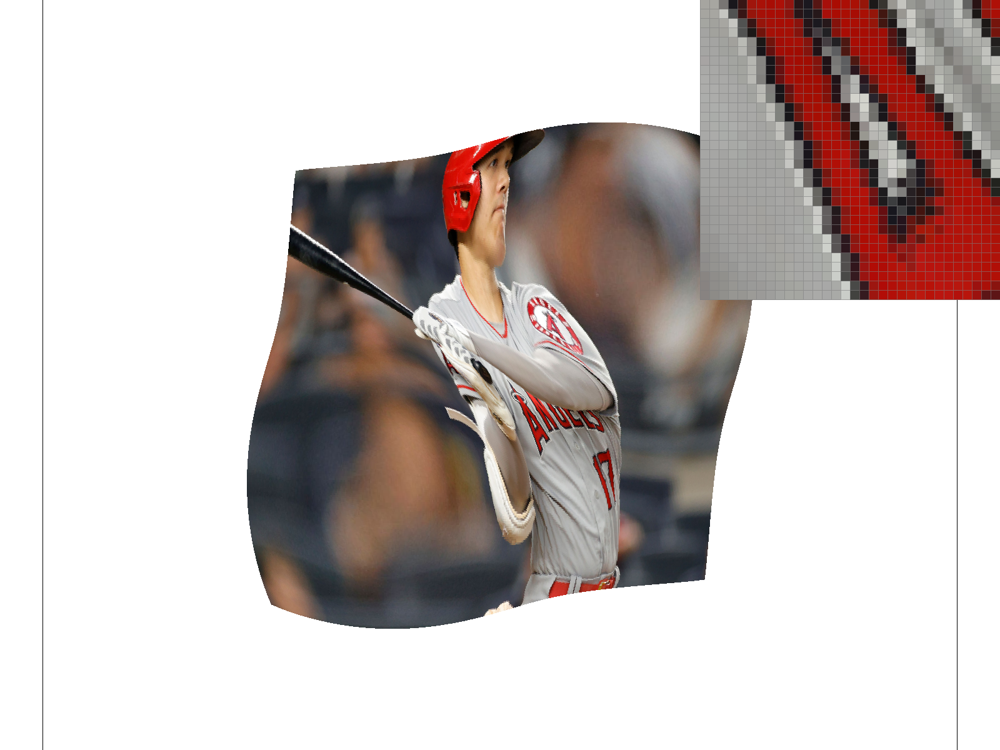
Nearest level sampling with bilinear interpolation
Linear level sampling with nearest pixel
Linear level sampling with bilinear interpolation
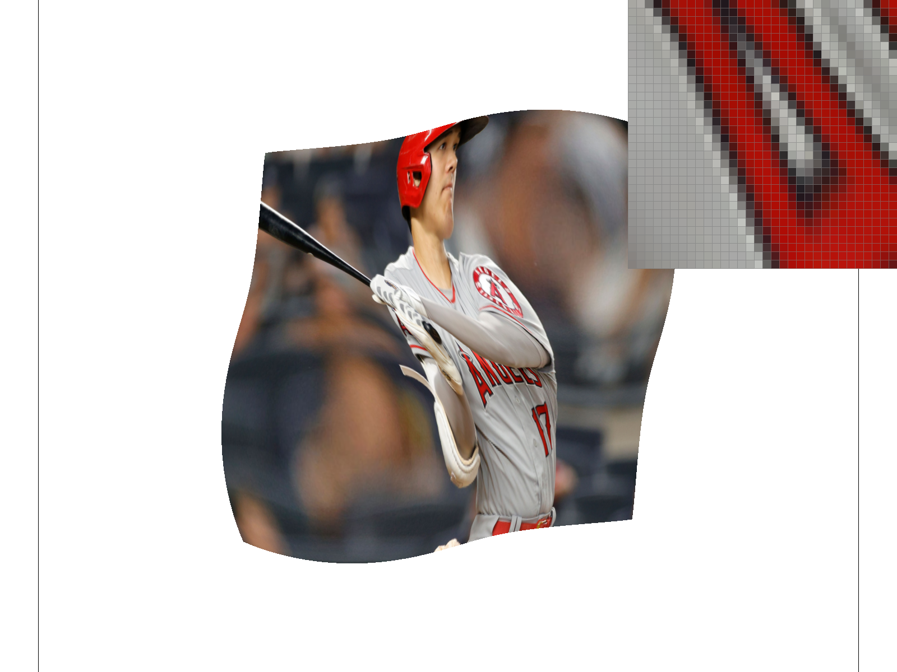
Conclusion
I really enjoyed this homework as I improved my knowledge about various
topics in pixel sampling, texture sampling, antialiasing, and many
different types of interpolation. I saw how the lecture content applied to
problems in real life, such as improving aliasing by supersampling, using
barycentric coordinates to interpolate and translate between screen and
texture space, using level sampling for non-uniform surfaces, and the
relationship between different combinations of parameters. While I did not
necessarily face any big issues, the project was challenging and made me
think about the purpose behind every small implementation detail.